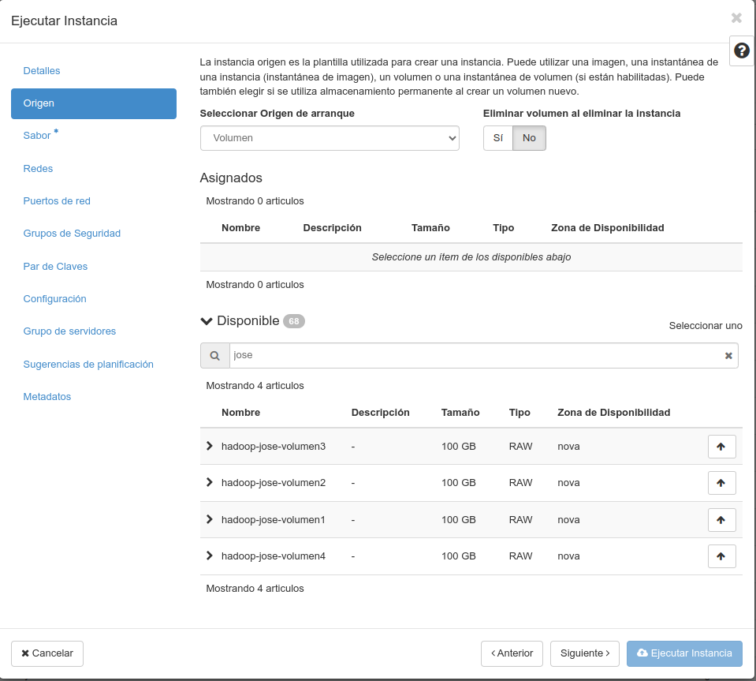

‚òÅÔ∏è OpenStack — üíø Volumes
Normalmente os servizos de virtualización na nube cobran polo uso de recursos: Procesador, memoria RAM, rede, GPU, espacio en disco...
Non sempre necesitamos todos os servizos activos, polo que se queremos aforrar custos, debemos reducir recursos.
Un volume é o disco duro virtual onde se almacenan os datos das instancias en OpenStack.
Imos ver unhas operacións básicas sobre volumes en OpenStack empregando o interfaz web Horizon de Nova.
- Como cambiarlle o nome do volume a unha instancia.
- Como asociar/desasociar un volume dunha instancia.
- Como extender un volume.
- Como clonar un volume.
- Como borrar unha instancia.
- Como lanzar unha instancia a partir dun volume.
Como cambiarlle o nome do volume a unha instancia.
Non é preciso nin desasociar o volume da instancia nin parala para renomear os volumes. Isto é útil para localizalos con posterioridade.
-
Imos a Computaci√≥n ⇒ Instancias:
-
Prememos no nome da instancia e nos sairá información sobre a mesma, imos ao final da páxina e veremos os volumes asociados:
-
Tras premer no volume ao que queremos cambiarlle o nome, aparecerá información sobre o mesmo:
-
Prememos no botón "Editar volumen" e mudamos o nome ao que queiramos, seguidamente confirmamos os cambios no botón azul.
Como asociar un volume a unha instancia en execución.
-
Imos a Computaci√≥n ⇒ Instancias:
-
Prememos na frecha de "Crear instancia" da instancia correspondente para que nos apareza o menú:

-
Seleccionamos a opción "Asociar Volume", seleccionamos o volume que queremos asociar e prememos no botón azul para confirmar.
-
Debemos montar o volume no sistema operativo. Primeiro entramos na instancia (seleccionamos o nome no listado de instancias) e vemos ao final a qué dipositivo virtual se asociou o novo volume, neste caso a
/dev/vdb -
Montámolo co comando mount (ou de ser preciso formateamos). Podemos asegurarnos que exista correctamente dentro da máquina o interfaz virtual que vimos previamente no interfaz web co comando
lsblkdende unha consola SSH.5.1 Opción 1: Para montar un volume:
5.2 Opción 2: Para formatear (borra os datos) dun volume:
-
Asegurámonos que estea correctamente montado executando o comando
mounte vendo que aparece na listaxe.
Como desasociar un volume
Importante: Se non queres perder datos, lembra apagar a instancia se lle vas a desasociar un volume. A outra opción é desmontar previamente o dispositivo.
Nota: Non se pode desasociar o volume raíz (o que contén o sistema operativo) dunha instancia en execución, para eso deberás apagala ou borrala. Se non tes marcada a opción de borrar o volume cando se borre a instancia, o volume non debería borrarse polo feito de eliminar a instancia.
Imos desasociar un volume adicional.
-
Buscamos o volume con calquera dos comandos:
mountlsblkdf -h
-
Desmontamos o volume:
-
Imos á interfaz web ⇒ Computaci√≥n ⇒ Instancias:
-
Prememos na frecha de "Crear instancia" da instancia correspondente para que nos apareza o menú:
-
Seleccionamos a opción "Desasociar Volume", seleccionamos o volume que queremos desasociar e prememos no botón azul para confirmar.
Como extender un volume.
Se o volume é de sistema, debemos apagar a máquina (realmente pódese facer coa instancia encendida e logo reiniciar pero NON é recomendable).
-
Imos a Computaci√≥n ⇒ Instancias:
-
Prememos no nome da instancia e nos sairá información sobre a mesma, imos ao final da páxina e veremos os volumes asociados:
-
Tras premer no volume que queremos extender, aparecerá información sobre o mesmo:
-
Prememos na frecha á dereita do bot√≥n "Editar volumen ↓" e seleccionamos "Extender Volumen".
-
Poñemos o novo tamaño e confirmamos co botón azul. Finalmente volvemos encender a instancia ou ven a reiniciamos de estar encendida.
Opción: Se non é un volume de sistema, debemos desmontalo, cambiar o tamaño da partición e volvelo montar. Exemplo:
lsblk
df -h
sudo umount /mnt/vdb
sudo e2fsck -f /dev/vdb
sudo resize2fs /dev/vdb
sudo mount /dev/vdb /mnt/vdb
lsblk
df -h
Como clonar un volume.
Debe estar o volume desasociado para que non dea problemas e para que nos deixe seleccionalo.
-
Imos a "Volúmenes ⇒ Volúmenes" e prememos no bot√≥n "Crear"
-
No cadro damos un nome ao novo volume, en "Origen del volumen" seleccionamos "Volumen" e en "Usar un volumen como origen" seleccionamos a volume que queremos clonar. Confirmamos premendo no botón azul.
-
Tras uns intres xa estará listo o novo volume para asociar a unha instancia ou para crear unha nova instancia baseada nel.
Como borrar unha instancia sen borrar o volume.
-
Opción 1: Está marcado borrar volume: Desasociamos antes o volume e despois borramos a instancia.
-
Opción 2: Non está marcado borrar volume ao borrar a instancia. Simplemente borramos a instancia.
Como lanzar unha instancia a partir dun volume.
Se destrues unha instancia, por defecto non se destrúe o volume (salvo que así o teñas marcado). Se non vas a empregar a instancia ata a seguinte clase, é unha boa práctica borrala e volvela crear baseada no volume de datos que tiña orixinalmente, así como moito cambiará a IP. Este método tamén é útil se queremos cambiar o sabor da instancia (CPU/RAM).
-
Imos a Computaci√≥n ⇒ Instancias:
-
Prememos no botón "Lanzar instancia".
-
Damos un nome á nova instancia e decidimos cantas queremos lanzar (por defecto 1):
-
En "Origen" debemos marcar en "Seleccionar Origen de arranque" a opci√≥n "Volumen". Logo, abaixo en dispo√±ible podemos buscar o volume que nos interese (que non estea xa asociado a outra máquina) e premer no bot√≥n co frecha arriba ↑ para seleccionalo.

-
Escollemos un sabor (procesador/RAM) como escolleríamos nunha creación normal dunha instancia:
-
Seleccionamos a rede na que queremos que estea:
-
Seleccionamos en caso necesario a configuración en "Puertos de Red".

-
Marcamos o grupo de seguridade que lle queiramos aplicar:
-
É importante seleccionar tamén o par de chaves que queiramos meter a maiores dos que xa teña. Presta atención a esta parte, se é unha imaxe doutra persoa incluirá as chaves públicas e privadas e meterá as que ti lle indiques a maiores.

-
Finalmente prememos en "Lanzar instancia" e tras uns intres xa a teremos lanzada co volume seleccionado.